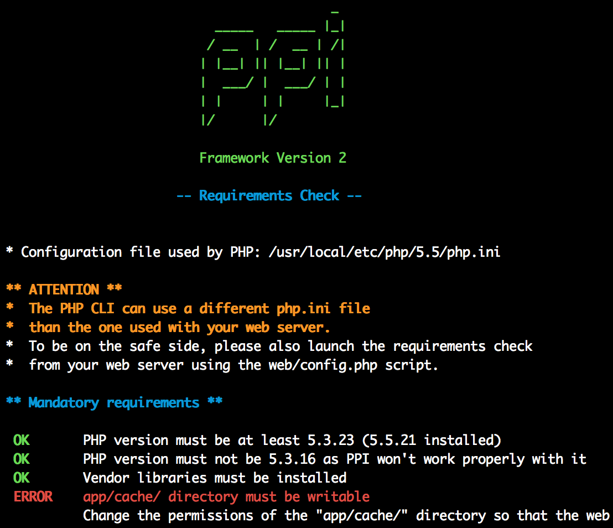

Paul Dragoonis
- Full-Stack Software Consultant from Scotland
- From PHP-FIG, PHP Core / Extensions, PHP.net
- Lead developer of PPI
- Using PHP since 2001
- T: @dr4goonis / @ppi_framework
- E: dragoonis@php.net / paul@ppi.io
Message of PPI
Frameworks are very powerful!
but.. they come at a cost
Amount of Cost = how you use and depend on frameworks
Today
Showing you how to unleash the power of not just 1 framework, but many!
How that benefits YOU, your team/company/project/customer
What are the costs?
Vendor lock-in! (technical debt)
This means:
Your app is tightly coupled to one framework
Hard to switch to a new framework
Hard to move code between apps, on different frameworks
What is P.P.I.?
Hmm... what does PPI stand for? Not much, but we can be creative!
- PHP
- Phramework

- Interoperability
What is PPI?
It's not a framework
Really, it's a framework delivery engine
It delivers core parts of frameworks to your app
Individually, to the features of your app
What you can use PPI as?
An engine that you can load up
A standalone application (or service) with dispatch() for HTTP
Or inside existing application
- Legacy App
- Wordpress
- Drupal
- CodeIgniter
- Yii
When can PPI help you?
Common Path of a project
Step 1: customer tells you what they want (kind of)
Step 2: you choose a framework/toolkit that suits that project
Step 3: you build it
What happens next?
Step 4: customer changes their mind on what they want
Step 5: the tool you chose in the beginning, is no longer the correct one
Step 6: you can't switch because you're locked into that vendor
Step 7: you stick with the tool because it's too difficult to switch to the correct tool
It's not your fault!
You're not psychic! You cannot predict the future
but, you can prepare for it :-)
How?
PPI prepares you for change.
It's DESIGNED for change.
How does PPI help you with change?
Your app code belongs to you, not to your framework.
PPI let's you make framework decisions on a per-feature basis, not per-app
This means
When your features grow / evolve / change
You can change your frameworks with them
Therefore, you're in charge!
Choosing a framework

Symfony

Zend

Laravel
Phalcon

Zend vs Symfony
Zend vs Symfony vs Laravel
Which one to choose?
Whichever ones make sense for your feature
Feature A (backend cms)

Feature B (frontend)

Quick PPI Recap!
PPI delivers core parts of frameworks to your app
Individually, to the features of your app
Let's you make framework decisions on a per-feature basis.
Using Frameworks Directly
Cost is influenced by how you use and rely on them
Using Frameworks In PPI
Technical Part Begins :-)
Powered by solid components

What's inside the PPI Engine?
composer.json:"require": {
"psr/log": "~1.0",
"psr/http-message": "^0.11",
"symfony/config": "~2.7",
"symfony/console": "~2.7",
"symfony/debug": "~2.7",
"symfony/finder": "~2.7",
"symfony/yaml": "~2.7",
"zendframework/zend-eventmanager": "~2.3",
"zendframework/zend-modulemanager": "~2.3",
"zendframework/zend-servicemanager": "~2.3",
"symfony/templating": "~2.7",
"symfony/framework-bundle": "~2.7",
"symfony/http-foundation": "~2.7",
"symfony/http-kernel": "~2.7",
"symfony/routing": "~2.7",
"symfony-cmf/routing": "1.3.0"
}
When you include PPI
composer.json:
"require": {
"ppi/framework": "~2.1"
}
PPI is Modular by design
You only need to add what you need
Need templating?
composer.json
"ppi/framework": "~2.1",
"ppi/smarty-module": "~1.0",
"ppi/twig-module": "~1.0",
"ppi/mustache-module": "~1.0"
Need routing?
composer.json
"ppi/framework": "~2.1",
"ppi/laravel-routing": "~1.0"
"ppi/aura-routing": "~1.0"
"ppi/symfony-routing": "~1.0"
Need Databases Bindings?
composer.json
"ppi/framework": "~2.1",
"ppi/symfony-routing": "~1.0"
"ppi/datasource-module": "~1.0", // LaravelDB, Eloquent, Doctrine ..etc
PSR Interfaces
PPI is a PSR-aware framework
PSR-0, PSR-1, PSR-2, PSR-3, PSR-4, PSR-7
PSR-7 Request
PPI/Framework/Http/Request.php
use Psr\Http\Message\RequestInterface;
use Symfony\Component\HttpFoundation\Request as SymfonyHttpRequest;
class Request extends SymfonyHttpRequest implements RequestInterface
{
public function withBody(StreamInterface $body) {
$new = clone $this;
$new->stream = $body;
return $new;
}
}
PSR-7 in controllers
composer.json:
<?php
namespace Application\Controller;
use PPI\Framework\Module\Controller as BaseController;
use Psr\Http\Message\RequestInterface;
class Mycontroller extends BaseController
{
public function indexAction(RequestInterface $request)
{
if ('POST' === $request->getMethod()) {
// do POST stuff
}
return $this->render('Application:index:index.html.twig');
}
}
PPI Router
We made a routing interoperability layer (Routing PSR?).
If a Routing PSR is created, we get to throw away a lot of code

Using PPI - Installation
21st century. Use composer:
Step 1:
$ composer create-project -sdev --no-interaction \
ppi/skeleton-app /var/www/skeleton
and for your convenience:
Step 2
$ vagrant up ppi-lamp
and now...
Skeleton App

$ app/console
App configuration
app/
├── FrameworkRequirements.php
├── check
├── config
│ ├── base
│ │ ├── app.php
│ │ └── datasource.yml
│ ├── dev
│ │ ├── app.php
│ └── prod
│ ├── app.php
├── console
├── init.php
└── views
├── base.html.php
├── base.html.smarty
└── base.html.twig
ZF-like configuration
app.php
<?php
$config = [];
$config['framework'] = [
'templating' => ['engines' => ['php', 'smarty', 'twig')] ,
'skeleton_module' => ['path' => './utils/skeleton_module']
];
$config['datasource'] => [
'connections' = require __DIR__ . '/datasource.php'
];
$config['modules'] = require __DIR__ . 'modules.php';
return $config;
Symfony-like YAML
app.yml
imports:
- { resource: datasource.yml }
- { resource: modules.yml }
framework:
templating:
engines: ["php", "smarty", "twig"]
skeleton_module:
path: "./utils/skeleton_module"
monolog:
handlers:
main:
type: stream
path: %app.logs_dir%/%app.environment%.log
level: debug
imports:
- { resource: datasource.yml }
- { resource: modules.yml }
framework:
templating:
engines: ["php", "smarty", "twig"]
skeleton_module:
path: "./utils/skeleton_module"
monolog:
handlers:
main:
type: stream
path: %app.logs_dir%/%app.environment%.log
level: debug
Front controller
public/index.php
<?php
require_once 'app/init.php';
// Create and configure the Application
$app = new PPI\Framework\App(array(
'environment' => 'dev',
'debug' => $true,
'rootDir' => realpath(__DIR__.'/../app')
));
$app->loadConfig($app->getEnvironment().'/app.php');
// Just Boot, no HTTP
$app->boot()
// OR: Handle requests
$app->run();
Module Structure
MyModule
|
├── Module.php
├── resources
│ ├── config
│ │ └── config.yml
│ ├── routes
│ │ ├── aura.php
│ │ └── symfony.yml
│ │ └── laravel.php
│ └── views
│ └── index
│ ├── index.html.mustache
│ ├── index.html.php
│ ├── index.html.smarty
│ └── index.html.twig
└── src
├── Services
│ └── DomainClass.php
├── Controller
│ ├── Index.php
Services
Simple and light definitions, using ZF2 ServiceManager component
class Module
{
public function getServiceConfig()
{
return ['factories' => [
'post.manager' => function($sm) {
$helper = new PostManagerModule\Classes\SliderManager();
$helper->setPostStorage($sm->get('slider.storage'));
return $helper;
},
'post.storage' => function($sm) {
$helper = new PostManagerModule\Storage\Post($sm->get('datasource'));
return $helper;
}
]];
}
}
Routing Defined Per Module
class Module extends AbstractModule implements ModuleInterface
{
public function getRoutes() {
return $this->loadAuraRoutes(__DIR__ . '/resources/routes/aura.php');
return $this->loadSymfonyRoutes(__DIR__ . '/resources/routes/symfony.yml');
return $this->loadLaravelRoutes(__DIR__ . '/resources/routes/laravel.php');
}
}
Symfony routes work in PPI
Homepage:
pattern: /
defaults: { _controller: "Application:Index:index"}
Downloads:
pattern: /downloads
defaults: { _controller: "Application:Index:downloads"}
DocsIndex:
pattern: /docs/{ver}/{page}.html
defaults: { _controller: "Application:Docs:index", ver: "2.0"}
Laravel routes work in PPI
use PPI\Framework\Router\LaravelRouter;
use Psr\Http\Message\RequestInterface as R;
/**
* @var LaravelRouter $router
*/
$router->get('/', [
'as' => 'Homepage',
'uses' => 'Application\Controller\LaravelExampleController@index'
]);
$router->get('/example', 'Application\Controller\LaravelExampleController@index');
Loading up PPI App in your legacy app
ppi.php
<php
$ppiApp = new PPI\App(['env' => 'prod', 'debug' => false]);
$ppiApp->loadConfig(include 'app.config.php');
$ppiApp->boot();
return $ppiApp;
Wordpress example
wordpress.php
function get_post() {
global $ppiApp;
$postManager = $ppiApp->getService('post.manager');
// Do wordpress-y things here
$post = $postManager->read(get_post_id());
}
Experimental Live Demo
Progress
PPI is ready for you to build projects in.
Release 2.1 is in alpha now and your feedback is welcome.
Recap
PPI prepares you for change. It's DESIGNED for change.
Дякую, Україно!
- Please Rate The Talk!
- Documentation: http://docs.ppi.io
- Gitter: gitter.im/ppi/framework
- Twitter: @ppi_framework